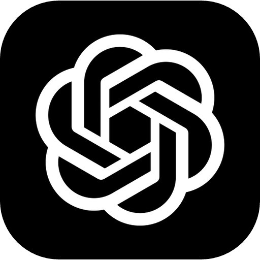
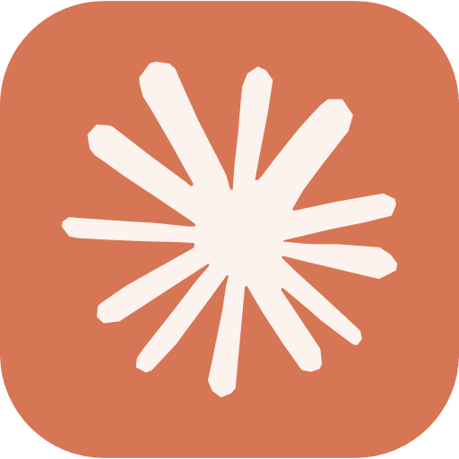

Welcome to Delphi
Connect a model to start reading.

ChatGPT subscription
Plus or above

Claude subscription
Pro or above
API key
OpenAI or Claude, pay per use
Copy
Installation guide
OpenAI
Claude
Other endpoint
Use a new key
Delphi data stays only on your Mac.